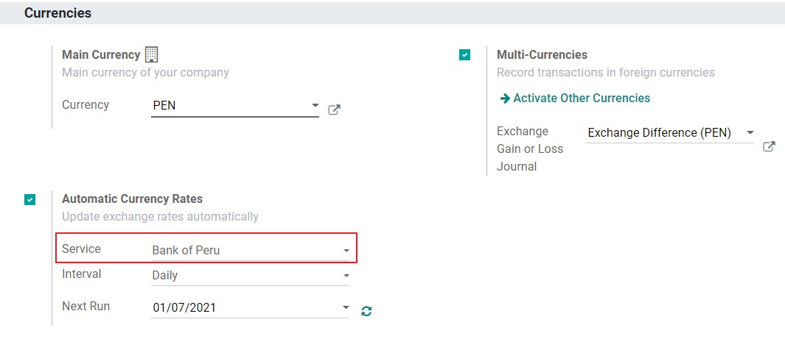

Peru¶
Introduction¶
The Peruvian localization has been improved and extended, in this version the next modules are available:
l10n_pe: Adds accounting features for the Peruvian localization, which represent the minimal configuration required for a company to operate in Peru and under the SUNAT regulations and guidelines. The main elements included in this module are: Chart of account, taxes, document types.
l10n_pe_edi: includes all technical and functional requirements to generate and validate Electronic Invoice, based on the SUNAT specification to create and process valid electronic documents, for more technical detail you can access the SUNAT EDI specifications, that keeps track of new changes and updates. The features of this module are based on the resolutions published on the SUNAT Legislation.
構成設定¶
Install the Peruvian localization modules¶
Go to Apps and search for Peru, then click Install in the module Peru EDI. This module has a dependency with Peru - Accounting. In case this last one is not installed, Odoo installs it automatically within EDI.

注釈
When you install a database from scratch selecting Peru as country, Odoo automatically installs the base module: Peru - Accounting.
Configure your company¶
In addition to the basic information in the Company, we need to set Peru as the Country, this is essential for the Electronic Invoice to work properly. The field Address Type Code represents the establishment code assigned by the SUNAT when companies register their RUC (Unique Contributor Registration):

ちなみに
In case the Address type code is unknown, you can set it as the default value: 0000. Be aware that if an incorrect value is entered, the Electronic invoice validation might have errors.
注釈
The NIF should be set following the RUC format.
Chart of Account¶
The chart of accounts is installed by default as part of the set of data included in the localization module, the accounts are mapped automatically in:
Taxes
Default Account Payable.
Default Account Receivable
The chart of accounts for Peru is based on the most updated version of the PCGE, which is grouped in several categories and is compatible with NIIF accounting.
Accounting Settings¶
Once the modules are installed and the basic information of your company is set, you need to configure the elements required for Electronic Invoice. For this, go to .
Basic Concepts¶
Here are some terms that are essential on the Peruvian localization:
EDI: Electronic Data Interchange, which in this refers to the Electronic Invoice.
SUNAT: is the organization that enforces customs and taxation in Peru.
OSE: Electronic Service Operator, OSE SUNAT's definition.
CDR: Receipt certificate (Constancia de Recepción).
SOL Credentials: Sunat Operaciones en Línea. User and password are provided by the SUNAT and grant access to Online Operations systems.
Signature Provider¶
As part of the requirements for Electronic Invoice in Peru, your company needs to select a Signature Provider that will take care of the document signing process and manage the SUNAT validation response. Odoo offers three options:
IAP (Odoo In-App Purchase)
Digiflow
SUNAT
Please refer to the sections below to check the details and considerations for each option.
IAP (Odoo In-App Purchase)¶
This is the default and the suggested option, considering the digital ceritificate is included as part of the service.

What is the IAP?¶
This is a signature service offered directly by Odoo, the service takes care of the next process:
Provides the Electronic invoice Certificate, so you do not need to acquire one by yourself.
Send the document to the OSE, in this case, Digiflow.
Receive the OSE validation and CDR.
How does it work?¶
The service requires Credits in order to process your electronic documents. Odoo provides 1000 credits for free in new databases. After these credits are consumed, you need to buy a Credit Package.
Credits |
EUR |
|---|---|
1000 |
22 |
5000 |
110 |
10,000 |
220 |
20,000 |
440 |
The credits are consumed per each document that is sent to the OSE.
重要
If you have a validation error and the document needs to be sent one more time, one additional credit will be charged. Therefore, it is paramount that you verify all information is correct before sending your document to the OSE.
What do you need to do?¶
In Odoo, once your enterprise contract is activated and you start working in Production, you need to buy credits once the first 1000 are consumed.
As Digiflow is the OSE used in the IAP, you need to affiliate it as the official OSE for your company on the SUNAT website. This is a simple process. For more information, please check OSE Affiliation guide.
Register Digiflow as the authorized PSE, please check PSE Affiliation guide.
Digiflow¶
This option can be used as an alternative, instead of using the IAP services you can send your document validation directly to Digiflow. In this case you need to consider:
Buy your own digital Certificate: For more detail regarding the official vendor list, and the process to acquire it, please refer to SUNAT Digital Ceritifcates.
Sign a service agreement directly with Digiflow.
Provide your SOL credentials.

SUNAT¶
In case your company wants to sign directly with the SUNAT, it is possible to select this option in your configuration. In this case you need to consider: - Get the SUNAT Certification process accepted.
Buy your own digital Certificate: For more detail regarding the official vendor list, and the process to acquire it, please refer to SUNAT Digital Ceritifcates.
Provide you SOL credentials.
重要
When using direct connection with the SUNAT, the SOL User must be set with the Company RUT + User
Id. Example: 20121888549JOHNSMITH
Testing environment¶
Odoo provides a testing environment that can be activated before your company goes into production.
When using the testing environment and the IAP signature, you don’t need to buy testing credits for your transactions as all of them are validated by default.
ちなみに
By default the databases are set to work on production, make sure to enable the testing mode if needed.
Certificate¶
In case you don’t use Odoo IAP, in order to generate the electronic invoice signature, a digital
certificate with the extension .pfx is required. Proceed to this section and load your file and
password.

Multicurrency¶
The official currency exchange rate in Peru is provided by the Bank of Peru. Odoo can connect directly to its services and get the currency rate either automatically or manually.
Please refer to the next section in our documentation for more information about multicurrencies.
Configure Master data¶
Taxes¶
As part of the localization module the taxes are created automatically with their related financial account and electronic invoice configuration.

EDI Configuration¶
As part of the taxes configuration, there are three new fields required for electronic invoice, the taxes created by default have this data included, but in case you create new taxes make sure you fill in the fields:

Fiscal Positions¶
There are two main fiscal positions included by default when you install the Peruvian localization.
Extranjero - Exportación: Set this fiscal position on customers for Exportation transactions.
Local Peru: Set this fiscal position on local customers.
Document Types¶
In some Latin American countries, including Peru, some accounting transactions like invoices and vendor bills are classified by document types, defined by the government fiscal authorities, in this case by the SUNAT.
Each document type can have a unique sequence per journal where it is assigned. As part of the localization, the Document Type includes the country on which the document is applicable;the data is created automatically when the localization module is installed.
The information required for the document types is included by default so the user does not need to fill anything on this view:

警告
Currently the documents supported on customer invoices are: Invoice, Boleta, Debit Note and Credit Note.
Journals¶
When creating Sales Journals, the following information must be filled, in addition to the standard fields on the Journals:
Use Documents¶
This field is used to define if the journal uses Document Types. It is only applicable to Purchase and Sales journals, which are the ones that can be related to the different set of document types available in Peru. By default, all the sales journals created use documents.
Electronic Data Interchange¶
This section indicates which EDI workflow is used in the invoice, for Peru we must select “Peru UBL 2.1”.

警告
By default, the value Factur-X (FR) is always displayed, make sure you can uncheck it manually.
パートナー¶
Identification Type and VAT¶
As part of the Peruvian localization, the identification types defined by the SUNAT are now available on the Partner form, this information is essential for most transactions either on the sender company and in the customer, make sure you fill in this information in your records.

Product¶
Additional to the basic information in your products, for the Peruvian localization, the UNSPC Code on the product is a required value to be configured.

Usage and testing¶
Customer invoice¶
EDI Elements¶
Once you have configured your master data, the invoices can be created from your sales order or manually. Additional to the basic invoice information described on our page about the invoicing process, there are a couple of fields required as part of the Peru EDI:
Document type: The default value is “Factura Electronica” but you can manually change the document type if needed and select Boleta for example.

Operation type: This value is required for Electronic Invoice and indicates the transaction type, the default value is “Internal Sale” but another value can be selected manually when needed, for example Export of Goods.

EDI Affectation Reason: In the invoice lines, additional to the Tax there is a field “EDI Affectation Reason” that determines the tax scope based on the SUNAT list that is displayed. All the taxes loaded by default are associated with a default EDI affection reason, if needed you can manually select another one when creating the invoice.

Invoice validation¶
Once you check all the information in your invoice is correct, you can proceed to validate it. This action registers the account move and triggers the Electronic invoice workflow to send it to the OSE and the SUNAT. The following message is displayed at the top of the invoice:

Asynchronous means that the document is not sent automatically after the invoice has been posted.
Electronic Invoice Status¶
To be Sent: To be sent: Indicates the document is ready to be sent to the OSE, this can be done either automatically by Odoo with a cron that runs every hour, or the user can send it immediately by clicking on the button “Sent now”.

Sent: Indicates the document was sent to the OSE and was successfully validated. As part of the validation a ZIP file is downloaded and a message is logged in the chatter indicating the correct Government validation.

In case there is a validation error the Electronic Invoice status remains in “To be sent” so the corrections can be made and the invoice can be sent again.
警告
One credit is consumed each time that you send a document for validation, in this sense if an error is detected on an invoice and you send it one more time, two credits are consumed in total.
Common Errors¶
There are multiple reasons behind a rejection from the OSE or the SUNAT, when this happens Odoo sends a message at the top of the invoice indicating the error details and in the most common cases a hint to fix the issue.
If a validation error is received, you have two options:
In case the error is related to master data on the partner, customer or taxes, you can simply apply the change on the record (example customer identification type) and once it is done click on the Retry button.
If the error is related to some data recorded on the invoice directly (Operation type, missing data on the invoice lines), the correct solution is to reset the invoice to Draft, apply the changes, and then send the invoice again to the SUNAT for another validation.

For more detail please refert to Common errors in SUNAT.
Invoice PDF Report¶
After the invoice is accepted and validated by the SUNAT, the invoice PDF report can be printed. The report includes a QR code, indicating the invoice is a valid fiscal document.

IAP Credits¶
Odoo’s Electronic IAP offers 1000 credits for free, after these credits are consumed in your production database, your company must buy new credits in order to process your transactions.
Once you run out of credits a red label is displayed at the top of the invoice indicating that additional credits are required, you can easily buy them by accessing the link provided in the message.

In the IAP service includes packages with different pricing based on the number of credits. The price list in the IAP is always displayed in EUR.
Special Use cases¶
Cancellation process¶
Some scenarios require an invoice cancellation, for example, when an invoice was created by mistake. If the invoice was already sent and validated by the SUNAT, the correct way to proceed is by clicking on the button Request Cancellation:

In order to cancel an invoice, please provide a cancellation Reason.
Electronic Invoice Status¶
To Cancel: Indicates the cancellation request is ready to be sent to the OSE, this can be done either automatically by Odoo with a cron that runs every hour, or the user can send it immediately by clicking on the button “Send now”. Once it is sent, a cancellation ticket is created, as a result the next message and CDR File are logged in the chatter:

Cancelled: Indicates the cancellation request was sent to the OSE and was successfully validated. As part of the validation a ZIP file is downloaded and a message is logged in the chatter indicating the correct Government validation.

警告
One credit is consumed on each cancellation request.
Cancellation process¶
When creating exportation invoices, take into account the next considerations:
The Identification type on your customer must be Foreign ID.
Operation type in your invoice must be an Exportation one.
The taxes included in the invoice lines should be EXP taxes.

Advance Payments¶
Create the advance payment Invoice and apply its related payment.
Create the final invoice without considering the advance payment.
Create a credit note for the Final invoice with the advance payment amount.
Reconcile the Credit note with the final invoice.
The remaining balance on the final invoice should be paid with a regular payment transaction.
Detraction Invoices¶
When creating invoices that is subject to Detractions, take into account the next considerations:
All the products included in the invoice must have these fields configured:

Operation type in your invoice must be
1001
Credit Notes¶
When a correction or refund is needed over a validated invoice, a credit note must be generated, for this just click on the button “Add Credit Note”, a part of the Peruvian localization you need to prove a Credit Reason selecting one of the options in the list.

ちなみに
When creating your first credit Note, select the Credit Method: Partial Refund, this allows you to define the credit note sequence.
By default the Credit Note is set in the document type:

To finish the workflow please follow the instructions on our page about Credit Notes.
注釈
The EDI workflow for the Credit notes works in the same way as the invoices.
Debit Notes¶
As part of the Peruvian localization, besides creating credit notes from an existing document you can also create debit Notes. For this just use the button “Add Debit Note”.
By default the Debit Note is set in the document type.